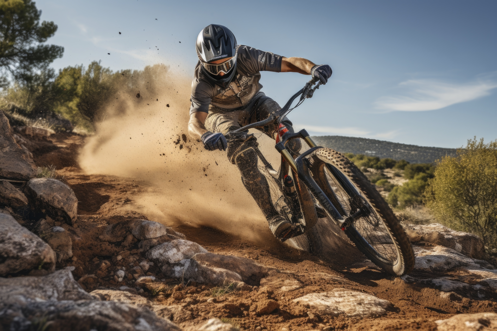
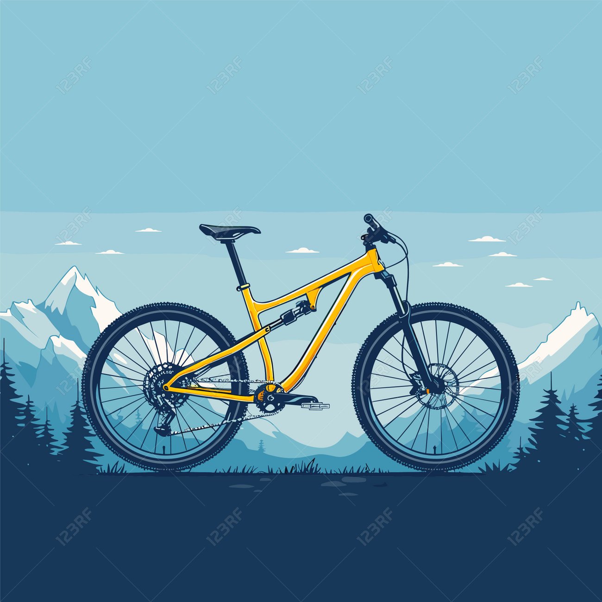

Le VTT, ou vélo tout terrain, est un sport qui allie adrénaline, nature et défi.
Que ce soit sur des sentiers escarpés, des forêts verdoyantes ou des montagnes majestueuses, le VTT offre une expérience unique à chaque sortie.
Ce sport est accessible à tous, des débutants aux cyclistes expérimentés.
Il permet de se reconnecter avec la nature tout en pratiquant une activité physique bénéfique pour la santé.
En plus des bienfaits physiques, le VTT favorise également le bien-être mental.
Il permet de s'évader, de se concentrer sur l'instant présent et de profiter de paysages à couper le souffle.
Alors, enfilez votre casque, montez sur votre vélo et partez à l'aventure !

Le VTT est plus qu'un simple sport, c'est un véritable mode de vie. Que vous soyez en quête d'aventure, de sensations fortes ou simplement d'une échappatoire à la routine quotidienne, le VTT a quelque chose à offrir à chacun.
Cliquez icipour en savoir plus